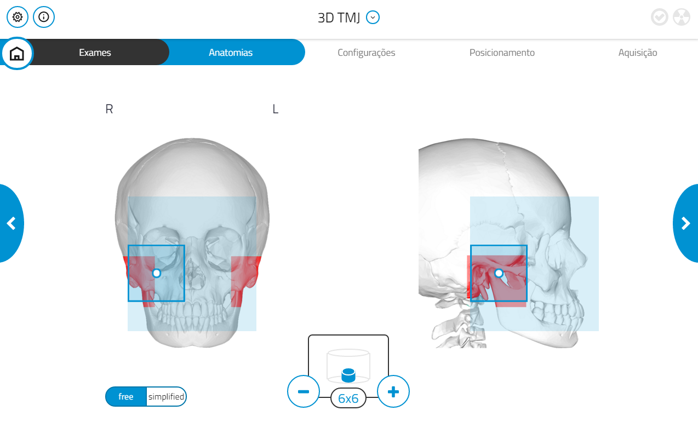
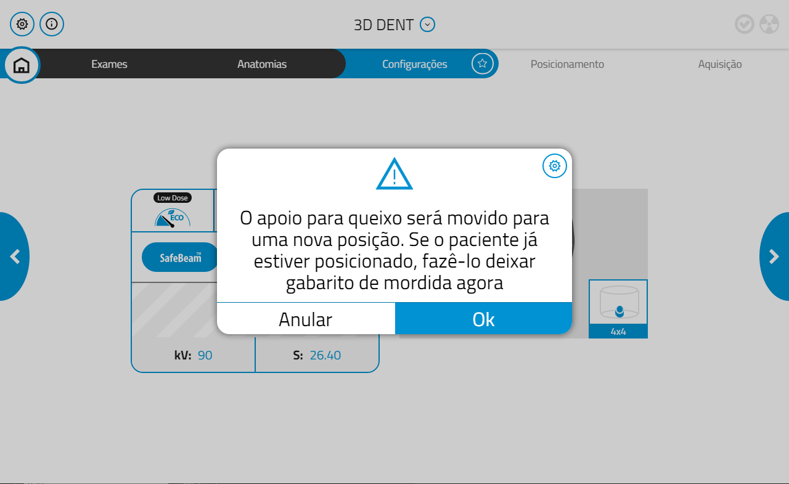
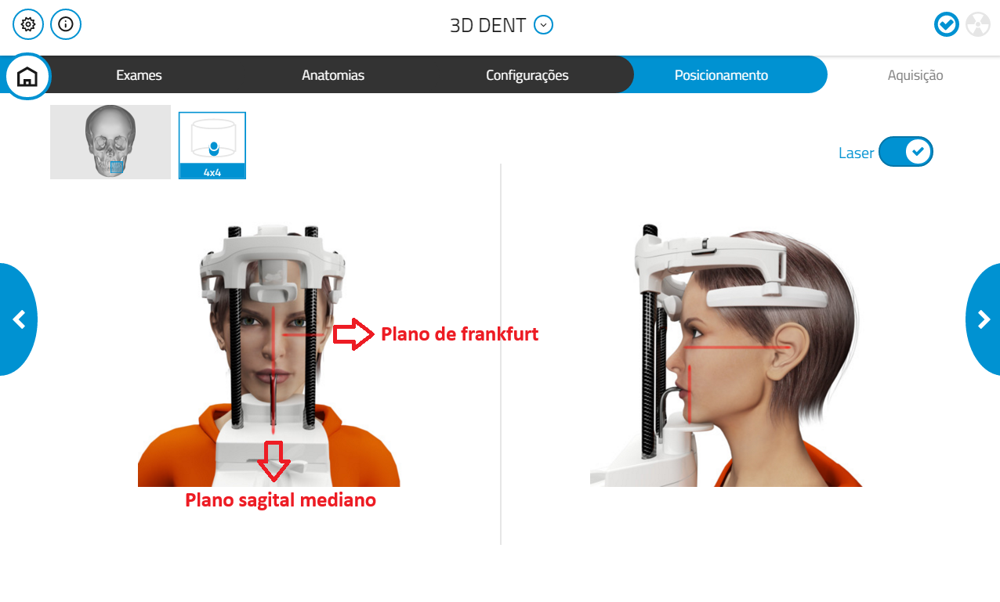
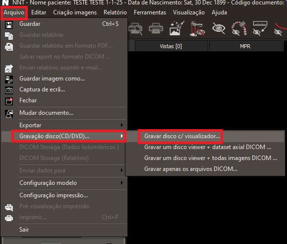

Introdução
Este manual reúne os passos que devem ser seguidos no acolhimento e na aquisição de exames no tomógrafo NewTom Giano HR.
O objetivo é padronizar o processo e facilitar o dia a dia dos técnicos, detalhando o uso dos sistemas envolvidos conforme a origem do paciente.
Siga cada etapa como descrito para garantir que todas as informações sejam registradas corretamente e o exame seja realizado sem erros.
Acolhimento de Pacientes
O processo de acolhimento varia conforme a origem do paciente, e cada origem utiliza um software específico:
-
Paciente Interno (triagem realizada no HEO): utilizar o sistema AGHUSE
- Acesso: https://aghuse.odonto.ufrgs.br
-
Paciente Externo - Prefeitura de Porto Alegre: utilizar o sistema Gercon
- Acesso: https://gercon.procempa.com.br
-
Paciente Externo - Prefeitura de Viamão: utilizar o sistema GOVBR Saúde
- Acesso: https://viamao.celk.com.br
Os passos a seguir devem ser seguidos para todos os pacientes, independentemente da origem:
1. Preenchimento tabela Planilha de Exames
- No computador acolhimento do Serviço de Radiologia, crie um novo registro na tabela Planilha de Exames;
- Crie um ID sequencial, com base no último ID utilizado para o tipo de exame correspondente (último ID + 1).
2. Preenchimento no software NNT
A seguir estão as orientações para preenchimento da ficha do paciente no software NNT.

Campos obrigatórios e como preenchê-los
Primeiro nome
- Preencher com o nome completo do paciente.
Data de Nascimento
- Formato:
dd / mm / aaaa
Indicado por
Selecionar conforme a origem do paciente:
- Prefeitura de POA
- Prefeitura de Viamão
- Especialização de Ortodontia (outras)
- Clínica I
- Clínica II
- Clínica III
- Clínica IV
- Extensão
- Nome do professor responsável
Notas paciente
Registrar os exames solicitados:
- Tipo de exame:
- TC
- PAN
- Tele Frontal
- Tele Lateral
- Mão e Punho
- Outras técnicas extrabucais: Waters, Lateral Oblíqua
Registrar a justificativa:
- Justificativa: incluir a razão do exame, se aplicável
ID Paciente
- Informar o ID criado no passo 1, na tabela Planilha de Exames do acolhimento do Serviço de Radiologia.
Após preencher todos os campos, clique em OK para salvar ou Cancelar para descartar as alterações. Prossiga para a Aquisição de exames.
Aquisição de Exames
Após a realização do acolhimento do paciente:
-
No computador da sala de exames, acesse o software NNT.
-
Localize o registro criado durante o acolhimento, utilizando os dados do paciente.
-
Chame o paciente e acompanhe-o até o tomógrafo.
-
Prossiga para a excecução dos exames, que podem ser:
- Panorâmica - 2D
- Tomografia - 3D
- Teleradiografia - CEPH
Aquisição de Exames - Tomografia (Software NNT)
1. Seleção da opção "3D"
Abra o programa NNT e selecione a opção "3D", representada pela imagem abaixo:

2. Escolha do Exame
Selecione o exame desejado:
Dentição
- Selecionar DENT:

Maxilar
- Selecionar MAXILLO:

Articulação Temporomandibular (TMJ)
- Selecionar TMJ:

3. Escolha da Região Anatômica
Agora, selecione a região anatômica a ser utilizada. O sistema disponibiliza duas opções:
Região anatômica "Free"
- Permite definir manualmente a área onde o exame será realizado.
- O FOV (campo de visão) pode ser ajustado com os botões "-" e "+", sendo 4x4 o menor valor possível.

Região anatômica "Simplified"
- Possui áreas pré-definidas para a realização do exame.
- O FOV também pode ser ajustado com os botões "-" e "+", sendo 4x4 o valor mínimo.

3.1 Variações e sugestões de FOV para solicitações
Maxila ou Mandíbula
- Sugestão: Dent 10x6

Maxila e Mandíbula
- Sugestão: duas aquisições separadas do FOV Dent 10x6
Face completa
- Sugestão: Maxilo 13x16

ATM
- Sugestão: TMJ 7x6
Hemi-arcada ou região anterior
- Sugestão: Dent 6x6
Localizada
- Sugestão: Dent 4x4

Clique para visualizar todas as variações do FOV
Dentição
-
Dent 4x4:
-
Dent 6x6:
-
Dent 8x6:

-
Dent 8x8:
-
Dent 10x6:
-
Dent 10x8:
-
Dent 10x10:
-
Dent 13x8:

-
Dent 13x10:
Maxilar
-
Maxilo 13x10:
-
Maxilo 13x14:

-
Maxilo 13x16:
-
Maxilo 16x10:

-
Maxilo 16x18:
Articulação Temporomandibular (TMJ)
-
TMJ 4x4:
-
TMJ 6x6:
 -
TMJ 7x6:
-
TMJ 8x8:

-
TMJ 15x6:

4. Configuração de Qualidade
Selecione a opção "Best Quality" para garantir a melhor definição da imagem.

5. Reset do Aparelho
-
Um aviso será exibido informando que o apoio para o queixo será movido.
- Se o paciente estiver posicionado, remova-o antes de continuar.
- Clique em OK.

-
Confirme o reset clicando novamente em OK e aguarde a execução do procedimento.


6. Posicionamento do Paciente
Após o reset, posicione o paciente corretamente no aparelho.
Alinhe os lasers de referência conforme a imagem abaixo:

Orientações por região
Maxila
- Posicione o bloco de mordida.
- Deixe o palato duro paralelo ao solo.
- O plano mediano sagital (PMS) deve estar perpendicular ao solo.
Mandíbula
- A base da mandíbula deve estar paralela ao solo.
- O plano mediano sagital (PMS) também deve estar perpendicular ao solo.
Adequações conforme a solicitação clínica:
Algumas situações exigem ajustes no procedimento padrão. As principais adequações necessárias conforme a solicitação clínica estão listadas na página abaixo:
7. Testes de Scout
Realize os testes de Scout, que são imagens iniciais usadas para o planejamento do exame.
- Execute o Scout Lateral:
-
Acione o disparador e mantenha pressionado até o fim do sinal sonoro:

- Clique em Próximo para realizar o Scout Póstero-Anterior:
-
Acione o disparador e mantenha pressionado até o fim do sinal sonoro:
-
Se necessário, ajuste o contraste com os indicadores na imagem:

-
Para centralizar a área de interesse:
- Pressione Ctrl + botão esquerdo do mouse sobre a linha pontilhada.
Se tudo estiver correto, clique em Iniciar para dar prosseguimento ao exame.
8. Realização do Exame
- Clique no botão Iniciar para começar a aquisição do exame:

- Acione o disparador e mantenha pressionado até o fim do sinal sonoro:
Após a aquisição, verifique se o exame foi realizado corretamente.
Se estiver tudo certo, siga para a etapa de exportação.
9. Exportação da Tomografia
-
No menu superior, clique em Arquivo.
-
No menu lateral, selecione:
Gravação disco (CD/DVD) → Gravar disco c/ visualizador
-
Na janela que será aberta:
- Selecione o paciente na lista.
- Clique em Guardar arquivos.

-
Na próxima janela:
- Selecione Desktop (Área de Trabalho).
- Clique em OK.

-
Por fim, vá até a Área de Trabalho e arraste o arquivo para:
Radiografias HEO (Z) → @Tomografia
Exportação de exames
A exportação de exames variam conforme a origem do paciente. Cada origem utiliza um software específico:
-
Paciente Interno (triagem realizada no HEO): utiliza o software AGHUSE.
-
Paciente Externo (encaminhado pela Prefeitura de Porto Alegre ou Viamão): utiliza o software Gercon.
Adequações com Especificidades da Solicitação
Algumas situações exigem ajustes no procedimento padrão. Abaixo, listamos as principais adequações necessárias conforme a solicitação clínica:
Pacientes Edêntulos
- Fixar o dispositivo de isopor no mordedor para garantir estabilidade durante a aquisição.
Análise de Mucosa (Gengiva)
- Realizar o afastamento dos lábios e bochechas com espandex para melhor visualização das estruturas moles.
Planejamento de Facetas
- Realizar o afastamento dos lábios e bochechas utilizando espandex ou algodão, conforme o protocolo ou disponibilidade.
- Garantir que toda a área estética anterior esteja visível e livre de interferências.
Tomografia de Guia Cirúrgica
- Posicionar o guia cirúrgico corretamente na cavidade bucal antes da aquisição.
- Verificar o encaixe adequado e estabilidade do guia.
- Confirmar que a tomografia abrange todas as áreas de interesse para o planejamento cirúrgico.